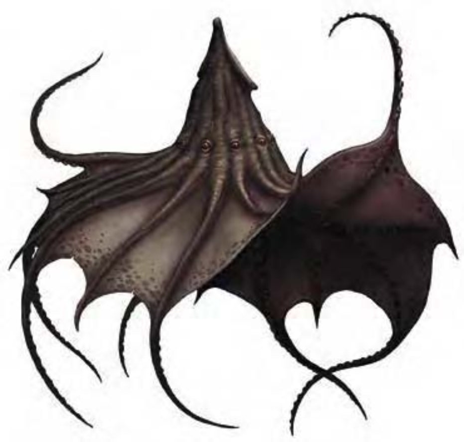

上方的钟乳石似乎裂开，现出一个像乌贼或章鱼的生物。该生物躯体有类似石质的壳包覆，伸展的触手间连着强韧的薄膜。
觅食时，暗幕魔兽伏在洞穴顶部附近等待猎物通过。制造魔法黑暗的能力让暗幕魔兽成为难以击败的对手。暗幕魔兽以躯体上方一只强壮的“足部”悬吊洞穴顶部。借着垂下触手相互紧抓，暗幕魔兽可让自己看起来像钟乳石；或借着展开触手以薄膜覆盖躯体，让自己看起来像一块岩石。其壳与皮肤通常类似石灰石，但暗幕魔兽可改变颜色以配合任何地底岩石。学者认为暗幕魔兽是从另一类似、但较弱的地底掠食者新近演化而来。暗幕魔兽从触手末端到头顶约4英尺长，约30磅重。
| 资料栏位 | 暗幕魔兽 (Darkmantle) 小型魔法兽 |
|---|---|
| 生命骰 | 1d10+1 (6HP) |
| 先攻 | +4 |
| 速度 | 20英尺 (4格)、飞行30英尺 (不良) |
| 防御等级 | 17 (+1体型、+6天生)、接触11、措手不及17 |
| 基本攻击/擒抱 | +1 / +0 |
| 攻击 | 挥击+5近战 (1d4+4) |
| 全力攻击 | 挥击+5近战 (1d4+4) |
| 占据/触及 | 5英尺 / 5英尺 |
| 特殊攻击 | 黑暗、精通擒抱、紧勒 1d4+4 |
| 特殊能力 | 盲感90英尺 |
| 豁免 | 强韧+3、反射+2、意志+0 |
| 属性 | 力量16、敏捷10、体质13、智力2、感知10、魅力10 |
| 技能 | 躲藏+10、聆听+5*、侦察+5* |
| 专长 | 精通先攻 |
| 环境 | 地底 |
| 组织 | 单独、成双、数尾 (3-9) 或群集 (6-15) |
| 挑战级数 | 1 |
| 宝藏 | 无 |
| 阵营 | 总是绝对中立 |
| 进化 | 2-3HD (小型) |
| 等级修正值 | ― |
暗幕魔兽会掉到猎物头上，用触手围住猎物头部攻击。一旦得手，便尝试紧缩窒息敌人。若第一次攻击失败，就会往上飞再试一次。
黑暗（超自然）：每天1次，暗幕魔兽可制造黑暗，效果与法术“黑暗术”相同（施法者等级5）。最常使用的时机是在攻击前。
精通擒抱（特异）：如果暗幕魔兽利用挥击击中体型为大型以下的对手，即可利用即时动作进行擒抱攻击，且不会引发对方借机攻击。如果擒抱成功，则可附着对手头部并进行“紧勒”。
紧勒（特异）：一旦通过擒抱检定，暗幕魔兽即可造成1d4+4点伤害。
盲感（特异）：暗幕魔兽能够发出一般生物无法察觉的高频率声波，并藉此观察四周，准确察觉身边120英尺内所有生物及物品。“沉默术”可以使此能力失效，让暗幕魔兽目盲。
技能：暗幕魔兽在进行“聆听”、“侦察”检定时具有+4种族加值。但若盲感失效，上述加值亦同时失效。由于具有保护色，暗幕魔兽在进行“躲藏”检定时具有+4种族加值。